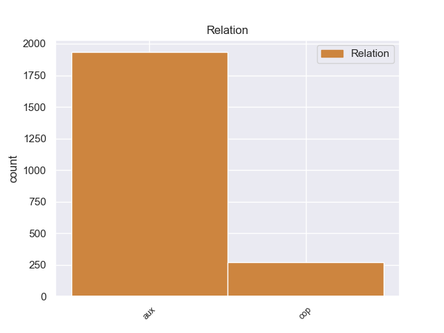
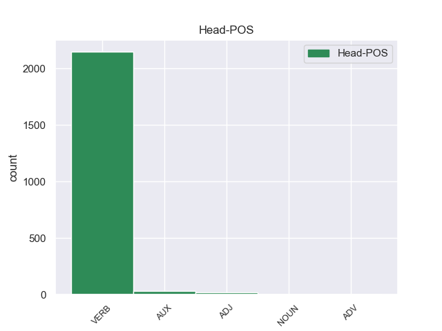
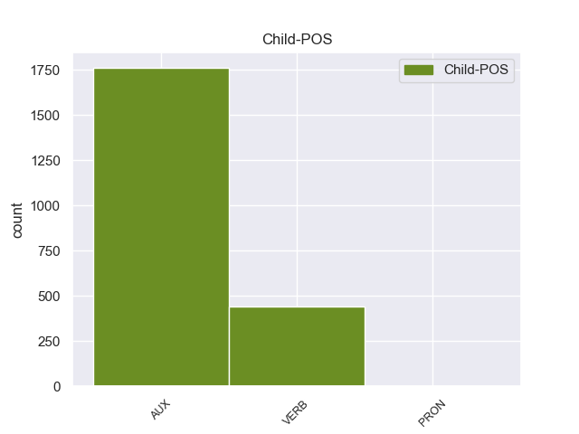

Distribution of features within this leaf



Agreement Rules sorted by frequency.
- When the dependent token is the auxiliary(aux) of the head token, and the dependent token is VERB.
1 Podía podía VERB _ Mood=Ind|Number=Sing|Person=3|Tense=Past|VerbForm=Fin 2 aux _ _
2 disparar disparar VERB _ Gender=Masc|Number=Sing|Tense=Past|VerbForm=Part 0 _ _ _
3 ocho _ _ _ _ 0 _ _ _
4 piezas _ _ _ _ 0 _ _ _
5 a _ _ _ _ 0 _ _ _
6 la _ _ _ _ 0 _ _ _
7 vez _ _ _ _ 0 _ _ _
8 en _ _ _ _ 0 _ _ _
9 andanada _ _ _ _ 0 _ _ _
10 lateral _ _ _ _ 0 _ _ _
11 y _ _ _ _ 0 _ _ _
12 seis _ _ _ _ 0 _ _ _
13 a _ _ _ _ 0 _ _ _
14 proa _ _ _ _ 0 _ _ _
15 en _ _ _ _ 0 _ _ _
16 vez _ _ _ _ 0 _ _ _
17 de _ _ _ _ 0 _ _ _
18 cuatro _ _ _ _ 0 _ _ _
19 a _ _ _ _ 0 _ _ _
20 banda _ _ _ _ 0 _ _ _
21 y _ _ _ _ 0 _ _ _
22 dos _ _ _ _ 0 _ _ _
23 en _ _ _ _ 0 _ _ _
24 caza _ _ _ _ 0 _ _ _
25 o _ _ _ _ 0 _ _ _
26 retirada _ _ _ _ 0 _ _ _
27 de _ _ _ _ 0 _ _ _
28 sus _ _ _ _ 0 _ _ _
29 predecesores _ _ _ _ 0 _ _ _
30 . _ _ _ _ 0 _ _ _
1 Es ser AUX _ Mood=Ind|Number=Sing|Person=3|Tense=Pres|VerbForm=Fin 2 cop _ _
2 destacable destacable VERB _ Mood=Ind|Number=Sing|Person=3|Tense=Pres|VerbForm=Fin 0 _ _ _
3 mencionar _ _ _ _ 0 _ _ _
4 que _ _ _ _ 0 _ _ _
5 él _ _ _ _ 0 _ _ _
6 solo _ _ _ _ 0 _ _ _
7 aparece _ _ _ _ 0 _ _ _
8 8 _ _ _ _ 0 _ _ _
9 minutos _ _ _ _ 0 _ _ _
10 en _ _ _ _ 0 _ _ _
11 la _ _ _ _ 0 _ _ _
12 película _ _ _ _ 0 _ _ _
13 . _ _ _ _ 0 _ _ _
1 A _ _ _ _ 0 _ _ _
2 pesar _ _ _ _ 0 _ _ _
3 de _ _ _ _ 0 _ _ _
4 haber haber AUX _ Gender=Masc|Number=Sing|Tense=Past|VerbForm=Part 5 aux _ _
5 estado estado NOUN _ Gender=Masc|Number=Sing|Tense=Past|VerbForm=Part 0 _ _ _
6 por _ _ _ _ 0 _ _ _
7 siglos _ _ _ _ 0 _ _ _
8 bajo _ _ _ _ 0 _ _ _
9 la _ _ _ _ 0 _ _ _
10 hegemonía _ _ _ _ 0 _ _ _
11 romana _ _ _ _ 0 _ _ _
12 , _ _ _ _ 0 _ _ _
13 Licia _ _ _ _ 0 _ _ _
14 fue _ _ _ _ 0 _ _ _
15 el _ _ _ _ 0 _ _ _
16 último _ _ _ _ 0 _ _ _
17 estado _ _ _ _ 0 _ _ _
18 helenístico _ _ _ _ 0 _ _ _
19 en _ _ _ _ 0 _ _ _
20 incorpora _ _ _ _ 0 _ _ _
21 se _ _ _ _ 0 _ _ _
22 formalmente _ _ _ _ 0 _ _ _
23 a _ _ _ _ 0 _ _ _
24 el _ _ _ _ 0 _ _ _
25 Imperio _ _ _ _ 0 _ _ _
26 . _ _ _ _ 0 _ _ _
1 Criticable _ _ _ _ 0 _ _ _
2 o _ _ _ _ 0 _ _ _
3 no _ _ _ _ 0 _ _ _
4 , _ _ _ _ 0 _ _ _
5 es _ _ _ _ 0 _ _ _
6 cierto cierto VERB _ Gender=Masc|Number=Sing|Tense=Past|VerbForm=Part 0 _ _ _
7 que _ _ _ _ 0 _ _ _
8 su _ _ _ _ 0 _ _ _
9 música _ _ _ _ 0 _ _ _
10 puede _ _ _ _ 0 _ _ _
11 parecer parecer VERB _ Gender=Masc|Number=Sing|Tense=Past|VerbForm=Part 6 cop _ _
12 tan _ _ _ _ 0 _ _ _
13 transgresora _ _ _ _ 0 _ _ _
14 y _ _ _ _ 0 _ _ _
15 novedosa _ _ _ _ 0 _ _ _
16 que _ _ _ _ 0 _ _ _
17 quizás _ _ _ _ 0 _ _ _
18 se _ _ _ _ 0 _ _ _
19 pase _ _ _ _ 0 _ _ _
20 de _ _ _ _ 0 _ _ _
21 tuerca _ _ _ _ 0 _ _ _
22 , _ _ _ _ 0 _ _ _
23 pero _ _ _ _ 0 _ _ _
24 lo _ _ _ _ 0 _ _ _
25 que _ _ _ _ 0 _ _ _
26 no _ _ _ _ 0 _ _ _
27 vamos _ _ _ _ 0 _ _ _
28 a _ _ _ _ 0 _ _ _
29 negar _ _ _ _ 0 _ _ _
30 es _ _ _ _ 0 _ _ _
31 que _ _ _ _ 0 _ _ _
32 ayer _ _ _ _ 0 _ _ _
33 gustaron _ _ _ _ 0 _ _ _
34 - _ _ _ _ 0 _ _ _
35 y _ _ _ _ 0 _ _ _
36 mucho _ _ _ _ 0 _ _ _
37 - _ _ _ _ 0 _ _ _
38 . _ _ _ _ 0 _ _ _
Disagree Examples:
1 El _ _ _ _ 0 _ _ _
2 Museo _ _ _ _ 0 _ _ _
3 de _ _ _ _ 0 _ _ _
4 Bellas _ _ _ _ 0 _ _ _
5 Artes _ _ _ _ 0 _ _ _
6 de _ _ _ _ 0 _ _ _
7 Turkmenistán _ _ _ _ 0 _ _ _
8 y _ _ _ _ 0 _ _ _
9 otros _ _ _ _ 0 _ _ _
10 museos _ _ _ _ 0 _ _ _
11 de _ _ _ _ 0 _ _ _
12 Balkanabat _ _ _ _ 0 _ _ _
13 han haber AUX _ Mood=Ind|Number=Plur|Person=3|Tense=Pres|VerbForm=Fin 14 aux _ _
14 adquirido adquirir VERB _ Gender=Masc|Number=Sing|Tense=Past|VerbForm=Part 0 _ _ _
15 sus _ _ _ _ 0 _ _ _
16 obras _ _ _ _ 0 _ _ _
17 . _ _ _ _ 0 _ _ _
1 El _ _ _ _ 0 _ _ _
2 trato _ _ _ _ 0 _ _ _
3 que _ _ _ _ 0 _ _ _
4 me _ _ _ _ 0 _ _ _
5 han haber AUX _ Mood=Ind|Number=Plur|Person=3|Tense=Pres|VerbForm=Fin 6 aux _ _
6 dado dar VERB _ Gender=Masc|Number=Sing|Tense=Past|VerbForm=Part 0 _ _ _
7 ha _ _ _ _ 0 _ _ _
8 sido _ _ _ _ 0 _ _ _
9 excelente _ _ _ _ 0 _ _ _
10 y _ _ _ _ 0 _ _ _
11 la _ _ _ _ 0 _ _ _
12 calidad _ _ _ _ 0 _ _ _
13 de _ _ _ _ 0 _ _ _
14 las _ _ _ _ 0 _ _ _
15 obras _ _ _ _ 0 _ _ _
16 canarias _ _ _ _ 0 _ _ _
17 es _ _ _ _ 0 _ _ _
18 muy _ _ _ _ 0 _ _ _
19 alta _ _ _ _ 0 _ _ _
20 . _ _ _ _ 0 _ _ _
1 Ambos _ _ _ _ 0 _ _ _
2 habían haber AUX _ Mood=Ind|Number=Plur|Person=3|Tense=Imp|VerbForm=Fin 3 aux _ _
3 insonorizadas insonorizado VERB _ Gender=Masc|Number=Sing|Tense=Past|VerbForm=Part 0 _ _ _
4 este _ _ _ _ 0 _ _ _
5 espacio _ _ _ _ 0 _ _ _
6 subterráneo _ _ _ _ 0 _ _ _
7 pequeño _ _ _ _ 0 _ _ _
8 , _ _ _ _ 0 _ _ _
9 que _ _ _ _ 0 _ _ _
10 se _ _ _ _ 0 _ _ _
11 encontraba _ _ _ _ 0 _ _ _
12 en _ _ _ _ 0 _ _ _
13 el _ _ _ _ 0 _ _ _
14 jardín _ _ _ _ 0 _ _ _
15 delantero _ _ _ _ 0 _ _ _
16 de _ _ _ _ 0 _ _ _
17 la _ _ _ _ 0 _ _ _
18 casa _ _ _ _ 0 _ _ _
19 . _ _ _ _ 0 _ _ _
1 Después _ _ _ _ 0 _ _ _
2 de _ _ _ _ 0 _ _ _
3 su _ _ _ _ 0 _ _ _
4 graduación _ _ _ _ 0 _ _ _
5 , _ _ _ _ 0 _ _ _
6 no _ _ _ _ 0 _ _ _
7 pudo _ _ _ _ 0 _ _ _
8 encontrar _ _ _ _ 0 _ _ _
9 un _ _ _ _ 0 _ _ _
10 trabajo _ _ _ _ 0 _ _ _
11 , _ _ _ _ 0 _ _ _
12 por _ _ _ _ 0 _ _ _
13 lo _ _ _ _ 0 _ _ _
14 tanto _ _ _ _ 0 _ _ _
15 se _ _ _ _ 0 _ _ _
16 volvió _ _ _ _ 0 _ _ _
17 a _ _ _ _ 0 _ _ _
18 dibujar _ _ _ _ 0 _ _ _
19 manga _ _ _ _ 0 _ _ _
20 ( _ _ _ _ 0 _ _ _
21 que _ _ _ _ 0 _ _ _
22 ya _ _ _ _ 0 _ _ _
23 había haber AUX _ Mood=Ind|Number=Sing|Person=3|Tense=Imp|VerbForm=Fin 24 aux _ _
24 aprendido aprender VERB _ Gender=Masc|Number=Sing|Tense=Past|VerbForm=Part 0 _ _ _
25 en _ _ _ _ 0 _ _ _
26 la _ _ _ _ 0 _ _ _
27 universidad _ _ _ _ 0 _ _ _
28 ) _ _ _ _ 0 _ _ _
29 . _ _ _ _ 0 _ _ _
1 Anteriormente _ _ _ _ 0 _ _ _
2 habían haber AUX _ Mood=Ind|Number=Plur|Person=3|Tense=Imp|VerbForm=Fin 3 aux _ _
3 roto romper VERB _ Gender=Masc|Number=Sing|Tense=Past|VerbForm=Part 0 _ _ _
4 ventanas _ _ _ _ 0 _ _ _
5 de _ _ _ _ 0 _ _ _
6 las _ _ _ _ 0 _ _ _
7 oficinas _ _ _ _ 0 _ _ _
8 de _ _ _ _ 0 _ _ _
9 seguridad _ _ _ _ 0 _ _ _
10 fuera _ _ _ _ 0 _ _ _
11 de _ _ _ _ 0 _ _ _
12 la _ _ _ _ 0 _ _ _
13 embajada _ _ _ _ 0 _ _ _
14 estadounidense _ _ _ _ 0 _ _ _
15 y _ _ _ _ 0 _ _ _
16 quemaron _ _ _ _ 0 _ _ _
17 vehículos _ _ _ _ 0 _ _ _
18 . _ _ _ _ 0 _ _ _